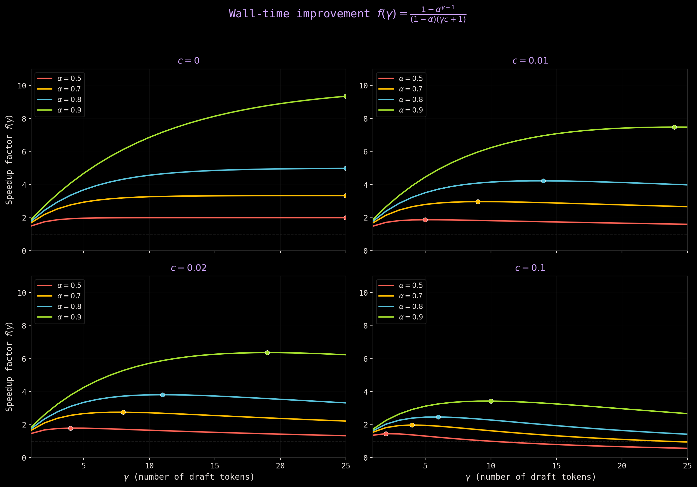

Speculative Decoding - The Bits and the Bytes!
Why you cannot afford to ignore it — Part 1
What is speculative decoding and why bother with it?
We are in the era of scaling models. Transformers have taken the world by storm, and LLMs are at the forefront. We have not hit any scaling wall, and we continuously see improved capabilities as we scale these models. The definition of a “small model” has changed significantly. While a model with a million parameters was considered small in the past, that label has now shifted to a model with 3-7B parameters.
Like any other approach, scaling also comes with its pros and cons. Ideally, you would want to serve the biggest model with better capabilities at scale. However, inference from autoregressive transformers is slow. Decoding \(K\) tokens takes \(K\) serial runs of the model. Hence, increasing the size of a model (or the active number of parameters, to be precise) increases latency, which in turn makes the model unusable for many real-world tasks. It makes LLM inference as challenging as, if not more challenging than, LLM training.
There are many ways to mitigate the above problem. In this post, we will discuss one such technique, speculative decoding, that does not require any changes to the original model itself, yet can help speed up inference without compromising on the quality of output tokens. We will divide the entirety of speculative decoding into three parts, namely:
- Speculative Decoding: The bits and the bytes (this post!) that will give you an overview of the fundamentals of speculative decoding.
- Eagle: Most commonly used algorithm for speculative decoding.
- Diffusion Based Methods (e.g. DFlash): The emerging new cool kid on the block.
Overview
We will align the notation in our post with the speculative decoding paper, but with a few changes to avoid any confusions. Specifically, we use \(p\) and \(q\) to denote the full probability distribution over the vocabulary. When we write \(p(x)\) or \(q(x)\) for a specific token \(x\), it refers to the scalar probability that the distribution assigns to that token. So \(x \sim q\) means “draw a token from distribution \(q\)”, and \(q(x)\) is the probability of the specific token we drew.
Let \(M_p\) be the target model for which we are trying to accelerate inference, and let \(p(x_t | x_{<t})\) be the distribution it generates for a prefix \(x_{<t}\). Let \(M_q\) be a more efficient approximation model for the same task, and let \(q(x_t | x_{<t})\) be the distribution it generates for the same prefix.
The core idea behind speculative decoding is simply this:
- Use the more efficient (smaller) model to generate \(\gamma\) tokens.
- Use the target model to verify the generated tokens in parallel.
- Accept or reject the tokens based on an acceptance criterion (which we will define later in the post).
- Sample an additional token from an adjusted distribution to fix the first rejection, or to add one in case all are accepted.
- In the best-case scenario, we will accept all the generated tokens. In the worst-case scenario, we will still end up with at least one newly generated token with just one parallel run of \(M_p\). Consequently, a single forward pass of the target model can output anywhere from \(1\) to \((\gamma+1)\) tokens (up to \(\gamma\) accepted draft tokens plus one bonus token sampled using the target model \(M_p\)), hence accelerating inference.
\[ \begin{array}{l} \hline \textbf{Algorithm 1 } \text{SpeculativeDecodingStep} \\ \hline \textbf{Inputs: } M_p, M_q, prefix. \\ \color{#D4AC0D}{\triangleright \text{ Sample } \gamma \text{ guesses } x_{1,\dots,\gamma} \text{ from } M_q \text{ autoregressively.}} \\ \textbf{for } i = 1 \textbf{ to } \gamma \textbf{ do} \\ \quad q_i(x) \leftarrow M_q\big(prefix + [x_1, \dots, x_{i-1}]\big) \\ \quad x_i \sim q_i \\ \textbf{end for} \\ \color{#D4AC0D}{\triangleright \text{ Run } M_p \text{ in parallel.}} \\ p_1(x), \dots, p_{\gamma+1}(x) \leftarrow M_p(prefix), \dots, M_p(prefix + [x_1, \dots, x_\gamma]) \\ \color{#D4AC0D}{\triangleright \text{ Determine the number of accepted guesses } n.} \\ r_1 \sim U(0, 1), \dots, r_\gamma \sim U(0, 1) \\ n \leftarrow \min\left(\{i - 1 \mid 1 \leq i \leq \gamma, r_i > \frac{p_i(x)}{q_i(x)}\} \cup \{\gamma\}\right) \\ \color{#D4AC0D}{\triangleright \text{ Adjust the distribution from } M_p \text{ if needed.}} \\ p'(x) \leftarrow p_{n+1}(x) \\ \textbf{if } n < \gamma \textbf{ then} \\ \quad p'(x) \leftarrow norm(\max(0, p_{n+1}(x) - q_{n+1}(x))) \\ \textbf{end if} \\ \color{#D4AC0D}{\triangleright \text{ Return one token from } M_p\text{, and } n \text{ tokens from } M_q.} \\ t \sim p' \\ \textbf{return } prefix + [x_1, \dots, x_n, t] \\ \hline \end{array} \]
Note: People often get confused by the phrase “verification in parallel”, so let me try to simplify and clarify it before going further. Verification is very similar to prefill for the target model. The target model has all the draft tokens from \(M_q\) available upfront. From \(M_p's\) perspective, they are just like a prompt to prefill over. Processing the sequence \(\big[\text{prefix}, x_1, x_2...x_\gamma \big]\) in one forward pass of the target model thus produces \(\gamma + 1\) distributions. The last token is the bonus/free sampled token we get when every draft token is accepted.
Speculative Sampling
Apart from generation from a draft model and parallel verification, speculative sampling is another core part of speculative decoding. During verification, it is the deciding factor for accepting and rejecting tokens. Here is an overview of how speculative sampling works:
- We sample \(x \sim q\)
- If \(q(x) \leq p(x)\), we accept the token. But if \(q(x) \gt p(x)\), then we reject the sample with a probability \((1 - \frac{p(x)}{q(x)})\). We discard all tokens after this position (if any).
- If the sample was rejected, then we sample the next token from an adjusted distribution \(p'(x) = norm(max(0, p(x) - q(x)))\)
There are a few simple but interesting aspects about speculative sampling. We will discuss each of them below.
Why do we sample from the adjusted distribution?
One question that instantly comes to mind when reading about speculative sampling for the first time: Why did we sample from the adjusted distribution instead of directly sampling from the target distribution \(p(x)\)?
The answer lies in probability accounting. For any token \(x\), the probability of it being output through the acceptance path is:
\[P(\text{accepted, } x) = \underbrace{q(x)}_{\text{prob of drafting } x} \times \ \underbrace{\min \bigg(1, \frac{p(x)}{q(x)}\bigg)}_{\text{prob of accepting } x} = \min\big(q(x),\ p(x)\big)\]
So the acceptance path already covered \(\min(p(x), q(x))\) of the target probability for each token. In case the token is rejected, the resample must cover only the remainder \((p(x) - \min(p(x), q(x)))\), which is exactly \(\max(0, p(x) - q(x))\). If we resampled from \(p(x)\) directly instead, we would double-count the probability already handled by acceptance, and the output distribution would no longer match \(p(x)\).
Let us take a simple example to understand this. Suppose our vocabulary contains four tokens: \(A, B, C, D\), and here are the probability distributions produced by the draft model and the verifier.
| Token | \(p(x)\) | \(q(x)\) |
|---|---|---|
| A | 0.50 | 0.20 |
| B | 0.10 | 0.40 |
| C | 0.30 | 0.15 |
| D | 0.10 | 0.25 |
For the final output to be distributed as \(p(x)\), every token must satisfy:
\[P(x) = P(\text{accepted, } x) + P(\text{rejected, resampled } x) = p(x)\]
The acceptance path covers \(\min(p(x), \ q(x))\) for each token:
| Token | \(p(x)\) | Covered by acceptance: \(\min(p, q)\) | Still needed |
|---|---|---|---|
| A | 0.50 | 0.20 | 0.30 |
| B | 0.10 | 0.10 | 0.00 |
| C | 0.30 | 0.15 | 0.15 |
| D | 0.10 | 0.10 | 0.00 |
Look at token \(B\). The acceptance path already accounts for its entire probability (0.10). It needs nothing from the resample. Same for token \(D\). Now suppose we resample from \(p(x)\) directly. Token \(B\) has \(p(B) = 0.10\), so the resample would give it additional probability, pushing its total above 0.10. The output distribution would no longer match \(p(x)\). How?
Case 1: Resample from \(p(x)\)
\[ \begin{align} P(B) = {\min(p, q)} + \underbrace{(1-\beta)}_{\text{prob of rejection}} \times \underbrace{\text{resample}(B)}_{\text{depends on choice}} \\~\\ \text{where } \ \beta = \sum_x \min(p(x), q(x)) = 0.20 + 0.10 + 0.15 + 0.10 = 0.55 \\~\\ P(B) = 0.10 + 0.45 \times p(B) = 0.10 + 0.45 \times 0.10 = 0.10 + 0.045 = 0.145 \end{align} \]
You can clearly see the additional probability assigned to it. Let us now look at the second case where we resample from the adjusted distribution instead.
Case 2: Resample from \(p'(x) = norm(\max(0, p(x) - q(x)))\)
\[ P(B) = 0.10 + 0.45 \times p'(B) = 0.10 + 0.45 \times \frac{\max(0,0.10−0.40)}{0.45} = 0.10 \]
The adjusted distribution gives \(B\) exactly zero probability in the resample, because \(B\) was already fully covered. This has a very interesting implication i.e. Speculative Sampling ensures that the output distribution in speculative decoding is exactly identical to the target distribution.
Acceptance Rate And Number Of Generated Tokens
For a given prefix, say \(x_{<t}\), the acceptance rate \(\beta\) is the probability of accepting \(x_t ∼ q(x_t|x_{<t})\) by speculative sampling. Specifically:
\[ \begin{align} \beta &= \mathbb{E}_{x\sim q} \bigg[ \min\big(1,\frac{p(x)}{q(x)}\big) \bigg] \notag \\[6pt] &= \sum_x q(x) \min\bigg(1,\frac{p(x)}{q(x)}\bigg) \notag \\[6pt] &= \sum_x \min\bigg(q(x),q(x)\frac{p(x)}{q(x)}\bigg) \notag \\[6pt] \beta &= \sum_x \min\bigl(p(x),q(x)\bigr) \tag{1} \end{align} \]
Remember, this acceptance rate is defined for a single prefix (it changes at every position within the same generation, since each position has a different prefix). If we assume that all \(\beta s\) are i.i.d, then we can define the expected acceptance rate \(\alpha = \mathbb{E}(\beta)\). It measures how well your draft model \(M_q\) approximates the target model \(M_p\). With that, we can now estimate the expected number of tokens generated in one run of the speculative decoding algorithm. Suppose \(N\) is the number of tokens generated in one run, and the total number of draft tokens we are allowed to generate is \(\gamma\). Then,
- If draft 1 is rejected \(\rightarrow N = 1\) (the resampled token)
- If draft 1 accepted, draft 2 rejected \(\rightarrow N = 2\)
- If drafts 1,2 accepted, draft 3 rejected \(\rightarrow N = 3\)
- …
- If all \(\gamma\) drafts accepted \(\rightarrow N = (\gamma + 1)\) (includes bonus token)
Each draft here is independently accepted with probability \(\alpha\) (the i.i.d assumption). We can then define the PMF for two cases as shown below:
For rejection at position \(k\) where \((k = 1,2,\ldots,\gamma)\):
\[ P(N = k) = \alpha^{k-1}(1-\alpha) \tag{2} \]
And for the case where \((k = \gamma + 1)\) (all accepted):
\[ P(N = \gamma + 1) = \alpha^\gamma \tag{3} \]
Computing the expected number of generated tokens \(\mathbb{E}(N)\) is now easy. For any non-negative integer random variable:
\[ E(N)=\sum_{k=1}^{\max} P(N \ge k) \]
Wherever \(P(N \ge k)\), it means at least \(k\) tokens were generated, which requires the first \((k-1)\) drafts to all be accepted. Hence,
\[ P(N \ge k) = \alpha^{k-1} \\~\\ E(N) = \sum_{k=1}^{\gamma+1} P(N \ge k) =\sum_{k=1}^{\gamma+1} \alpha^{k-1} =\sum_{j=0}^{\gamma} \alpha^j \]
This is a geometric series with \((\gamma+1)\) terms (common ratio \(\alpha\)). Therefore the expected number of generated tokens in a single run of speculative decoding algorithm are:
\[
E(N)= \frac{1-\alpha^{\gamma+1}}{1-\alpha} \tag{4}
\]
Calculating \(\alpha\)
Though we used \(\alpha\) in the previous section for calculating the expected number of generated tokens, we still have not expressed \(\alpha\) in a computable form. The authors of the speculative decoding paper (Leviathan et al., 2023) introduce a divergence \(D_{LK}\), connect it to \(\beta\), and then get \(\alpha\). Suppose \(M(x)\) is the mid-point distribution defined as \(M(x) = \frac{p(x) + q(x)}{2}\). We can then define the divergence as:
\[ D_{LK}(p,q) = \sum_x |p(x)-M(x)| = \sum_x |q(x)-M(x)|. \tag{5} \]
Note: The midpoint distribution \(M(x)\) is a construction used to define \(D_{LK}\) in a way that makes the symmetry between \(p\) and \(q\) obvious. As we will show below, \(D_{LK}\) reduces to the total variation distance \(\sum_x \frac{|p(x) - q(x)|}{2}\), and \(M(x)\) never appears again in any subsequent result.
Why are the two sums in the above expression equal? We can prove it.
\[ \begin{aligned} |p(x)-M(x)| &= \left|p(x)-\frac{p(x)+q(x)}{2}\right| \\[4pt] &= \left|\frac{2p(x)-p(x)-q(x)}{2}\right| \\[4pt] &= \frac{|p(x)-q(x)|}{2} \end{aligned} \]
\[ \begin{aligned} |q(x)-M(x)| &= \left|q(x)-\frac{p(x)+q(x)}{2}\right| \\[4pt] &= \left|\frac{2q(x)-p(x)-q(x)}{2}\right| \\[4pt] &= \frac{|q(x)-p(x)|}{2} \\[4pt] &= \frac{|p(x)-q(x)|}{2} \end{aligned} \]
Given that, we can derive the total variation distance between \(p\) and \(q\) as:
\[ \begin{align} D_{LK}(p,q) &= \sum_x \frac{|p(x)-q(x)|}{2} \notag \\[4pt] &= \sum_x \frac{ p(x)+q(x)-2\min \bigl(p(x),q(x)\bigr) }{2} \notag \\[4pt] &= \frac{1}{2} \left[ \sum_x p(x) + \sum_x q(x) - 2\sum_x \min \bigl(p(x),q(x)\bigr) \right] \notag \\[4pt] &= \frac{1}{2} \left[ 1+1 - 2\sum_x \min \bigl(p(x),q(x)\bigr) \right] \notag \\[4pt] D_{LK}(p,q) &= 1-\sum_x \min \bigl(p(x),q(x)\bigr) \tag{6} \end{align} \]
We can infer a few interesting things from eqn. \({(6)}\).
- Because \(\min(p(x),q(x)) = \min(q(x),p(x))\), we can say the divergence \(D_{LK}\) is symmetric. How about the range? We can calculate it too.
- \(0 \le \min \bigl(p(x),q(x)\bigr) \le p(x) \ \Longrightarrow\ \ 0 \le \sum_x \min \bigl(p(x),q(x)\bigr) \le 1 \quad \Longrightarrow \ 0 \le D_{LK} \le 1\)
- \(\begin{aligned} D_{LK}(p,q)=0 &\;\Longleftrightarrow\; p=q\end{aligned}\)
- \(\begin{aligned} D_{LK}(p,q)=1 &\;\Longleftrightarrow\; p \text{ and } q \text{ have disjoint support} \end{aligned}\)
Using \({(1)}, {(5)}\) and \({(6)}\), we can now calculate \(\alpha\) as:
\[ \alpha = 1-\mathbb{E} \left[D_{LK}(p,q)\right] = \mathbb{E} \bigg[\min \bigl(p(x),q(x)\bigr)\bigg] = \mathbb{E} \bigg[\sum_x \min \bigl(p(x),q(x)\bigr)\bigg] \tag{7} \]
If you have \(N\) prefixes, then for each prefix, run both models \(M_q\) and \(M_p\) and calculate \(\sum_x \min \bigl(p(x),q(x)\bigr)\). Average that across prefixes and you have \(\alpha\). This is exactly how it was calculated by the authors in the paper for 10K generated tokens.
Q. What are the implications of acceptance rate \(\alpha=0\) and \(\alpha=1\)?
When the acceptance rate is zero, it means we generate only one token (the resampled one) per run, which is the same number of tokens as in standard decoding. This means \(M_q\) provides no benefit and, in fact, hurts the overall performance, as we incur the overhead cost of the drafter for generating a single token. On the other hand, when the acceptance rate is 1, we generate \((\gamma + 1)\) tokens (including 1 for the bonus token we get after verification) in a single run. A high \(\alpha\) means the drafter \(M_q\) has a high distributional overlap with the target model \(M_p\).
Q. If \(M_q\) is very close to \(M_p\), i.e., we have a high \(\alpha\), does that guarantee a wall-time improvement?
Not necessarily. The speed-up factor depends on the drafter’s size. As the size of the drafter increases, the gains in wall time decrease. We will discuss this in detail in the next few sections.
Wall time Improvement
The whole point of using speculative decoding is to improve the wall time for inference. We proved that we can reduce the number of calls to the target model for inference by a factor of \(\frac{1-\alpha^{\gamma+1}}{1-\alpha}\), but we have not formalized the expected wall time improvement yet. Also, it should be clear that the assumption here is that you have enough compute at hand to support the increased concurrency, meaning we can generate \(\gamma\) tokens and do \((\gamma + 1)\) concurrent evaluations in parallel without increasing the wall time
We know the expected tokens per iteration. We now factor in the cost of running \(M_q\) to get the actual wall-time improvement. Suppose the ratio between the time for a single run of \(M_q\) and the time for a single run of \(M_p\) is the cost coefficient \(c\). \[ c = \frac{T_{M_q}}{T_{M_p}} \tag{8}\]
Note that the cost coefficient here depends on the hardware configuration and the software implementation. In the author’s setup, \(M_q\) was a couple of orders of magnitude smaller than \(M_p\), and \(c\) was always less than 0.05; often negligibly close to 0.
Let \(T\) be the time taken by a single forward pass of the target model \(M_p\). We can now derive the wall time improvement step by step.
- Cost of one iteration of speculative decoding algorithm
- Maximum number of tokens generated by the drafter \(M_q \rightarrow \ \gamma\)
- Each forward pass of the drafter takes \(cT\) (using \({(8)}\)) time.
- \(\gamma\) forward passes of the drafter model take a total of \(\gamma cT\) time.
- One forward pass of \(M_p\) verifies \((\gamma + 1)\) tokens in parallel in time \(T\)
- Therefore, the total cost per iteration is given as: \[T_{\mathrm{spec}} = \gamma cT \ + \ T=(γc+1)T \tag{9}\]
- Tokens per iteration: We already have the expected number of tokens from \({4}\) given as: \[E(N)= \frac{1-\alpha^{\gamma+1}}{1-\alpha}\]
- Cost per token with speculative decoding: Given that, we can now calculate the overall expected cost for producing a token with speculative decoding as: \[\frac{T_{\mathrm{spec}}}{E(N)}
=
\frac{(\gamma c + 1)T}
{\dfrac{1-\alpha^{\gamma+1}}{1-\alpha}}
=
\frac{(\gamma c + 1)(1-\alpha)}
{1-\alpha^{\gamma+1}}
\cdot T
\]
- Cost per token with standard decoding: The cost of producing one token with standard decoding is the same as the time taken by one forward pass of the target model \(M_p\). Hence \[T_{\mathrm{standard}} = T\]
- Calculate wall time improvement: \[ \text{Improvement} = \frac{T_{\text{standard}}}{T_{\text{spec/token}}} = \frac{T} {\dfrac{(\gamma c + 1)(1-\alpha)} {1-\alpha^{\gamma+1}} \cdot T} = \frac{1-\alpha^{\gamma+1}} {(1-\alpha)(\gamma c + 1)} \tag {10} \]
In the last section, we said that having a high expected acceptance rate \(\alpha\) does not guarantee a wall time improvement or speedup. It is to relate the “why” with Eq.\((10)\). Ignoring the \(\gamma\) for a bit, we can see that if your acceptance rate is high but the cost coefficient \(c\) is higher (\(\alpha < c\)), meaning the forward pass of the drafter is costly, then you may or may not notice any speed up. For speedups, we need both high \(\alpha\) and low \(c\).
If \(\alpha > c\), then we can derive the expected speed up for the bare minimum value of draft tokens. Plugging \((\gamma = 1)\) in the above equation:
\[ \begin {aligned} \text{Improvement} = \frac{1-\alpha^2}{(1-\alpha)(c+1)} = \frac{(1-\alpha)(1+\alpha)} {(1-\alpha)(1+c)} = \frac{1+\alpha}{1+c} \end{aligned} \]
Since \(\alpha > c\), we can say that:
\[
(1+\alpha > 1+c) \quad
\text {or} \quad \frac{1+\alpha}{1+c} > 1
\]
Number of Arithmetic Operations
Even though the cost of the drafter is negligible in many cases, we cannot ignore the fact that speculative decoding trades compute for wall time. The drafter generates \(\gamma\) draft tokens, and one iteration may output up to \(\gamma +1\) tokens. A single run of the speculative decoding then results in \(\gamma\) runs of \(M_q\) and \((\gamma +1)\) parallel runs of \(M_p\). We may end up performing more arithmetic operations than standard decoding. It depends on the acceptance factor.
Note: We are talking about arithmetic operations here, not wall time. \((\gamma + 1)\) parallel runs of \(M_p\) cost the same wall time as a single run (one memory read), but they cost \((\gamma + 1) \times \mathrm{Ops}\).
Say \(F\) is the number of arithmetic operations for a single forward pass of standard decoding. Let \(\mu\) be the ratio of arithmetic operations per token of the draft model \(M_q\) to that of the target model \(M_p\): \[\mu = \frac{F_{M_q}}{F_{Mp}} = \frac{F_{M_q}}{F}\]
Let’s do the math step by step:
Derive the Ops per iteration of speculative decoding
- \(\gamma\) runs of \(M_q\) resulting in a total of \(\gamma F_{M_q} \Longrightarrow \gamma \mu F\) ops
- \((\gamma + 1)\) parallel runs of \(M_p\) resulting in a total of \((\gamma + 1)F\) ops
- Total ops per iteration: \(F_{iter} = \gamma \mu F + (\gamma + 1)F = (\gamma \mu + \gamma + 1)F\)
Derive the ops per token in speculative decoding: To calculate the number of ops per token, divide the ops per iteration by the expected number of tokens generated using speculative decoding. \[ \begin{aligned} \mathrm{F}_{\mathrm{spec}} &= \frac{(\gamma \mu +\gamma+1)F} {\dfrac{1-\alpha^{\gamma+1}}{1-\alpha}} \\~\\[4pt] \mathrm{F}_{\mathrm{spec}} &= \frac{(\gamma \mu +\gamma+1)(1-\alpha)} {1-\alpha^{\gamma+1}} \cdot F \end{aligned} \]
We can now calculate the expected factor of increase in the number of total operations as: \[ \mathrm{F_{factor}} = \frac{\mathrm{F}_{\mathrm{spec}}} {\mathrm{F}_{\mathrm{standard}}} = \frac{(1-\alpha)(\gamma \mu + \gamma + 1)} {1-\alpha^{\gamma+1}} \tag{11} \]
So, a low \(\alpha\) (more rejections) increases arithmetic operations, and vice versa. In most cases, the drafter is so small that these additional ops are negligible compared to the overall arithmetic operations. On the other hand, we are reducing the memory reads per token by the target model by a factor of \(\frac{1-\alpha^{\gamma+1}}{1-\alpha}\), which is good because inference is memory-bound.
Choosing \(\gamma\)
The above sections discuss the acceptance rate, the drafter cost, etc., but there is still one important variable left in the equation \(\gamma\), the maximum number of draft tokens to generate in one run. The fundamental reason why we are interested in speculative decoding is wall time improvement \((\frac{1-\alpha^{\gamma+1}}{(1-\alpha)(\gamma c + 1)})\), and the optimal \(\gamma\) is the one that maximizes it. Let’s analyze if a sweet spot exists. Wall time improvement is given as:
\[ f(\gamma) = \frac{1-\alpha^{\gamma+1}}{(1-\alpha)(\gamma c + 1)} = \frac{1-\alpha^{\gamma+1}} {1-\alpha} \cdot \frac{1}{\gamma c+1} \]
- The first factor in the above equation is the “expected number of generated tokens” per iteration. When \(\gamma\) (the number of generated tokens) grows, this term grows but with diminishing returns.
- The denominator of the second factor, \(\gamma c + 1\), is the relative iteration cost. When the cost of running the drafter is negligible, this term does not affect our speedup or wall time improvement factor. But it certainly affects when \(c > 0\). Let us take an example to understand this. Say, the acceptance rate is \(\alpha=0.8\), and the cost coefficient is \(c=0.02\). What is the impact on the wall time improvement factor as we increase the value of \(\gamma\)? Take a look below
| \(\gamma\) | E(# generated tokens) | Cost \(\gamma c + 1\) | \(f(\gamma)\) |
|---|---|---|---|
| 1 | 1.80 | 1.02 | 1.76 |
| 2 | 2.44 | 1.04 | 2.35 |
| 3 | 2.95 | 1.06 | 2.78 |
| 5 | 3.69 | 1.10 | 3.35 |
| 7 | 4.16 | 1.14 | 3.65 |
| 10 | 4.57 | 1.20 | 3.81 |
| 15 | 4.86 | 1.30 | 3.74 |
| 20 | 4.95 | 1.40 | 3.54 |
| 25 | 4.98 | 1.50 | 3.32 |
The cost factor increases linearly with \(\gamma\) and the improvement factor peaks around \(\gamma=10\).
Here is a plot showcasing different scenarios for different values of the cost coefficient \(c\), acceptance rate \(\alpha\) and the number of draft tokens \(\gamma\)

- \(c = 0\) (free drafter): There is no penalty for drafting more, so larger \(\gamma\) is always better (just diminishing returns). This is the theoretical ideal.
- \(c = 0.1\) (expensive drafter): Peaks and then sharp decline. Speculative decoding in this case hurts performance at large \(\gamma\).
Does an upper bound exist for the expected number of generated tokens?
In the section above, we used a fixed value of \(\gamma\) for every iteration. But \(\beta\) varies across positions as some tokens are easy to draft, others are hard. What if we had an oracle that knew \(\beta\) at each position and could set \(\gamma\) accordingly? It would draft many tokens when acceptance is likely and skip drafting when rejection is certain thereby wasting no computation.
With a fixed \(\gamma\), the expected tokens per iteration are capped by the geometric series:
\[ E(N_{\text{fixed}}) = \sum_{j=0}^{\gamma} \alpha^j = \frac{1-\alpha^{\gamma + 1}}{1- \alpha} \]
The oracle removes this cap by always choosing the perfect \(\gamma\). Expected number of generated tokens in that case:
\[ E(N_{\text{oracle}}) = \sum_{j=0}^{\infty} \alpha^j = \frac{1}{1- \alpha} \]
For \(\alpha = 0.8\), it gives \(\frac{1}{0.2} = 5\), which is consistent with the computations in the table above. The oracle tells us that five tokens per iteration is a hard ceiling for this acceptance rate, no matter how large the \(\gamma\) is. The oracle is not practically achievable though. Why? Because knowing \(\beta\) at a position requires running \(M_p\) which is the very computation we are trying to avoid, but it serves a useful theoretical ceiling.
That’s all for the first part. Feedback is always welcome!